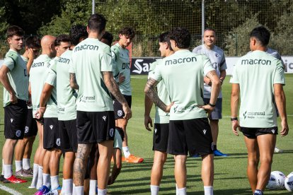

El nuevo Burgos de Sergio Francisco no ha empezado de la mejor manera posible en esta Liga Hypermotion tan exigente desde el inicio. Y es que son muchos los aspectos que debe mejorar si quiere aspirar alto y cumplir los objetivos marcados por el club, como es el play-off.
Bien es cierto que no estamos viendo la mejor versión de los castellanos, pero de todo se puede sacar algo positivo. De lo negativo todos nos acordamos. Pero cuando lo bueno eclipsa a lo malo, nadie sabe valorarlo.
No todo es negro ni es blanco, siempre hay puntos que acercan al gris a un color más claro o más oscuro. Esos puntos de luz que aportan optimismo a este inicio de temporada negativo son jugadores como Dadie, Curro Sánchez o Vencedor entre otros.
Precisamente, esta es la mejor noticia hasta el momento: las individualidades, sobre todo en la línea de ataque, donde los encuentros se deciden. Karrikaburu, Álex Forés y Javi Llabrés han dado un importante salto de calidad a la plantilla que puede llegar a ser determinante en cuanto a goles y puntos que nos van a dar con sus acciones.
En este deporte, lo más importante y lo más caro es el gol y, por suerte, hoy lo tenemos en plantilla. Pero para llegar a esa altura hay que empezar desde abajo. El tejado está construido, falta completarlo y darle forma, asentando una base y una estructura sólida que sostenga el proyecto y dé forma a todo lo demás.
En este aspecto podemos ser positivos porque, cuando las líneas se junten y se cree un equipo, el Burgos CF, no tengo ni duda de que va a funcionar y con esto nos tenemos que quedar. Con la esperanza de que en algún momento los goles y buen juego llegarán porque este equipo puede. Desde luego que por nombres no va a ser.
Es aquí donde entra la cuestión de la paciencia. ¿Hasta cuándo vamos a tener que esperar para ver a un Burgos reconocible? Los brotes verdes son muy pocos y la afición empieza a meter presión, lo cual nunca es bueno para trabajar y mejorar.
Hace dos años, cuando Ramis cogió el equipo a mitad de temporada en una situación muy complicada, los cambios se veían desde el principio; por lo menos sabíamos qué línea iba a seguir el equipo, cosa que hoy, con Sergio Francisco, todavía no conocemos y empieza a preocupar.
Es pronto para opinar y para que las alarmas se enciendan, así que lo único que podemos hacer es esperar y ver si realmente funciona. Si no es así, se deberán tomar cartas en el asunto.
En definitiva, las piezas del puzle ya las tenemos, únicamente tienen que encajar y eso es trabajo de Sergio Francisco.